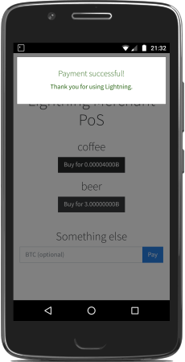
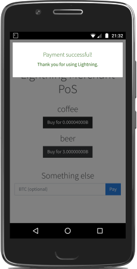

Running a Lightning Node on Android ⚡️
This post will detail the steps I followed to get a lightning node(c-lightning) and a full bitcoin node(bitcoin core) running on my old android phone(Moto G5).
TL;DR
- Root android phone.
- Create a linux chroot with bitcoin and lightning running.
- Place on sd card and run it.
You will need to know your way around the command line and unix(the instructions are based off Debian). This is a proof of concept. There are simpler solutions for using lightning:
- Light or custodial wallets: eclair, bluewallet, htlc.me and many more.
- Pre-configured Raspberry Pi casa and lightninginabox.
- Wait for bip157 neutrino light client and watchtowers.
- Finally if you ask nicely, I might sell you one of these phones already setup üòé.
Disclaimer
I've been running this on my phone for a few weeks and it seems to work fine, however having lots of these as routing nodes might not be a good thing. Finally I'm not responsible if you brick your phone, lose money or worse üí•.
FAQ
- How well does this run lightning and bitcoin?
It has no problems running bitcoin with the full blockchain synced and I've managed to create/maintain lightning channels, spend and receive with it, all the whilst running android. I attribute this to the quality of the bitcoin core and c-lightning code.
- Can I access bitcoin and lightning from android?
Yep, so I created a quick python server which exposes bitcoin and lightning rpc on localhost. I also tried out lightning charge with nanopos. You can access it all from your browser in android using localhost(TODO: open source).
- What's the battery life like?
My old Moto G5 lasts about 2 days whilst bitcoin and lightning are running in the background.
- How much data does it use? Can I use this with 4G?
I've got it connected to wifi but I think 4G may be doable. To keep the blockchain synced you need at minimum 144mb per day. So thats a bit more than 5gb a month. I haven't checked how much bandwidth lightning uses yet(TODO: check how gossipy it is).
- Can I do this without rooting my phone?
It might be possible with the ndk or proot(TODO: checkout abcore, proot, termux and userland).
- Can I do this without having to store the whole blockchain on sd card?
We could use a pruned bitcoin node but it's currently not supported on c-lightning.
Hardware List
- Android phone which can be rooted. I used a Motorola G5.
- Sd card to store the bitcoin blockchain. I used the 400gb micro-sdxc.
- Usb to micro-usb cable.
- Sd card reader.
Software Prerequisite
- Install android adb(command line tool to communicate with phone when connected to computer).
- Add udev rules under
/etc/udev/rules.d/51-android.rules. - Install debootstrap, a command line tool to create a Debian system in a subdirectory of another already installed system(android in our case).
Rooting Android
Feel free to skip this section if you've already rooted your phone. We will be using the custom recovery tool TWRP and Magisk to get root on our phones. You can search here if your device is supported: https://twrp.me/Devices.
Unlocking Bootloader
- WARNING this will void your warranty!!!
- On Moto G5 get developer options(settings, about phone, hit build number 7 times).
- In developer options, select OEM unlocking and USB debugging.
- Connect your phone to laptop using usb to micro-usb cable,
./adb devicesshould list your device if you've got adb and udev rules properly setup. - Go to https://motorola-global-portal.custhelp.com/app/standalone/bootloader/unlock-your-device-a and follow instructions.
./adb reboot bootloader./fastboot oem get_unlock_dataget the code../fastboot oem unlock <CODE FROM MOTOROLA>twice to unlock LOL.- Enjoy the horrible warning when phone boots up üòÑ.
TWRP
- Once your bootloader is unlocked, you can boot a custom recovery tool like TWRP.
- Go ahead and grab twrp image from https://twrp.me/motorola/motorolamotog5.html.
./adb reboot bootloader./fastboot boot twrp-3.2.3-0-cedric.img- BACKUP At this point you should backup the stock android image.
- To backup once booted into TWRP, hit backup, save system.img, boot.img and recovery.img.
- This will put the backup somewhere under
/sdcard, you need to save it locally with./adb pull <TWRP BACKUP LOCATION>.
Getting Root with Magisk
- Download https://github.com/topjohnwu/Magisk/releases.
- Put the Magisk zip onto your phone
./adb push Magisk-v18.0.zip /sdcard. - Now boot into TWRP recovery.
./adb reboot bootloader./fastboot boot twrp-3.2.3-0-cedric.img- Once in TWRP, select Install and select the Magisk zip, reboot.
- Check you have root,
./adb shellthensuandwhoamishould sayroot. Congratulations you have rooted your device.
Creating a Linux Chroot
Phew, you've managed to root your device! Now the actual work begins. We will be creating a linux(Debian) environment to run bitcoin and lightning.
- Now we create a boostrap environment for your phones architechture, most Android phones are arm. Double check with:
./adb shell uname -a # leave chroot exit My Moto G5 reports back
armv7lfor which the corect Debian port isarmhf, check here. I assume your computer is runningx86-64(check withuname -aon your computer), so we will have to use qemu, install withapt-get install qemu-user-static.First stage of bootstrap, running on your computer.
mkdir bootstrap # replace armhf with your phones architechture debootstrap --foreign --arch=armhf --variant=minbase stable bootstrapCopy over the magic qemu stuff
cp /usr/bin/qemu-arm-static bootstrap/usr/bin.Now we chroot into bootstrap and complete the second stage.
chroot bootstrap ./debootstrap/debootstrap --second-stage- Create user alice with network access in our bootstrap environment(make sure you are still in the chroot).
export PATH=/bin:/sbin:/usr/bin:/usr/sbin adduser alice # add android network access groupadd -g 3003 aid_inet usermod -g 3003 _apt usermod -g 3003 alice Exit chroot(
exit), download and copy over bitcoin core. Use the correct version(32 bit arm for my Moto G5),cp -R bitcoin-0.17.1 bootstrap/home/alice.Now back in chroot and compile c-lightning for arm.
chroot bootstrap export PATH=/bin:/sbin:/usr/bin:/usr/sbin apt-get install autoconf automake build-essential git libtool libgmp-dev libsqlite3-dev python python3 net-tools zlib1g-dev # become alice /bin/su - alice export PATH=/bin:/sbin:/usr/bin:/usr/sbin git clone https://github.com/ElementsProject/lightning.git cd lightning git checkout v0.7.0 ./configure make
Place on sd card and run it!
Finally let's copy over the bootstrap environment to your sd card. Insert your sd card into card reader and find out the device name using
fdisk -l. Mine was called/dev/mmcblk0.WARNING backup your sd card first.
Wipe it with
wipefs -a /dev/mmcblk0.Create a small FAT partition to stop android complaining.
fdisk /dev/mmcblk0 n # follow the defaults for primary, parition(1) and first sector # when prompted for last sector, make it 20mb +20M # now change to exFat t # partition type we want is 7 HPFS/NTFS/exFAT 7- Create the second parition where we will put our bootstrap environment.
fdisk /dev/mmcblk0 n # follow the defaults for primary, parition(2), first sector and last sector(take up all the space) # partition type is 83 Linux by default # exit and save w fdisk -lshould show something likemmcblk0for sd card,mmcblk0p1is small fat partition andmmcblk0p2is where our bootstrap environment will be.Make
mmcblk0p2an EXT4 file system with label lightning,mkfs.ext4 /dev/mmcblk0p2 -L lightningMount and copy over bootstrap environment
mount /dev/mmcblk0p2 /mnt cp -Rp bootstrap /mnt umount /mnt- Great we now have everything setup. Put the sd card back into your phone, connect to your computer and drop into
./adb shell.su # create a directory to mount our bootstrap environment mkdir /data/lit # we need to find our sd card device name, usually android will name it mmcblk1 blkid # look for the one labeled lightning, for me it was mmcblk1p2 # let's mount everything, replace mmcblk1p2 with your sd card partition containing the bootstrap environment mount /dev/block/mmcblk1p2 /data/lit mount --bind /dev /data/lit/bootstrap/dev mount --bind /proc /data/lit/bootstrap/proc mount --bind /sys /data/lit/bootstrap/sys # we chroot from android to our bootstrap environment chroot /data/lit/bootstrap /bin/bash # become alice /bin/su - alice export PATH=/bin:/sbin:/usr/bin:/usr/sbin:/home/alice/bitcoin-0.17.1/bin /home/alice/bitcoin-0.17.1/bin/bitcoind -daemon /home/alice/lightning/lightningd/lightningd
Conclusion
Congratulations üôå, that was a lot of work! You now have bitcoin and lightning running on your phone. The next requirements you'll probably have:
- It's taking ages to sync the bitcoin blockchain.
Sync/Initial Block Download on your computer than copy over
.bitcoindirectory to sd card.- I want to get it running without having to connect to computer and
./adb shell. I made a quick android app which basically runs these commands using ProcessBuilder(TODO: open source).
- I want to control/getinfo about bitcoin and lightning.
Yep, so I created a quick python server which exposes bitcoin and lightning rpc on localhost. I also tried out lightning charge with nanopos. You can access it all from your browser in android using localhost(TODO: open source).
- I don't have a static ip.
Use Tor.
- I'd like to donate, buy you a beer/coffee, name my first born after you.
-
my lightning node(you'll need to be running tor):
0340023797652d7ba0d8065f8fb412fd537dee0875634a68679d0415d5a2369a03@osunmcx5dqi5ibmrbskjxdlg2hvaf22ja6nl5apcjorbqom5mwrti5qd.onion:9735my btc(bech32):
bc1q7fzlt08k2ann9ullp4cl2w6mretm89xnv64agcmy btc:
36Y5SmSLxZ2maRUUParf4QWuGGYELZssdebuy a phone already setup

 
